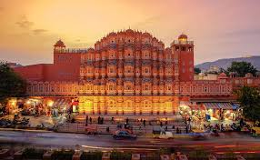
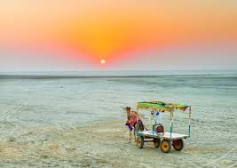
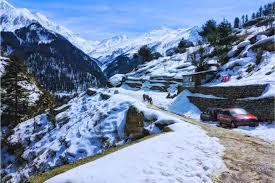

India is a land of diversity, rich culture, and breathtaking landscapes. From the snow-covered mountains of the north to the sunny beaches of the south, India offers unforgettable experiences for every traveler. This website will take you on a journey through the most beautiful and famous places in India.
India is a land of diversity, rich culture, and breathtaking landscapes. From the snow-covered mountains of the north to the sunny beaches of the south, India offers unforgettable experiences for every traveler. This website will take you on a journey through the most beautiful and famous places in India.

Jaipur is known for its royal palaces, forts, and vibrant culture. Popular attractions include Hawa Mahal and Amber Fort.

Gujarat is a vibrant state in western India known for its rich culture, heritage, and beautiful landscapes. It offers a perfect mix of history, tradition, wildlife, and modern development.

Manali is a hill station known for its scenic beauty, snow-capped mountains, and adventure sports.

India is rich in culture and traditions. Different states have their own languages, festivals, dances, and cuisines. Festivals like Diwali, Holi, and Eid are celebrated with great joy and unity.
Indian food is known for its spices and flavors. Some popular dishes include:
| Place | State | Best Time | Famous For | Budget(in rupees) |
|---|---|---|---|---|
| Goa | Goa | Nov - Feb | Beaches | 10,000 |
| Jaipur | Rajasthan | Oct - Mar | Forts & Palaces | 8,000 |
| Manali | Himachal Pradesh | Dec - Feb | Snow & Mountains | 12,000 |
| Kerala | Kerala | Sep - Mar | Backwaters | 15,000 |
| Varanasi | Uttar Pradesh | Oct - Mar | Spiritual City | 7,000 |
India is a country full of colors, traditions, and beauty. Whether you love history, nature, food, or adventure, India has something for everyone. Start your journey and explore the incredible beauty of India!